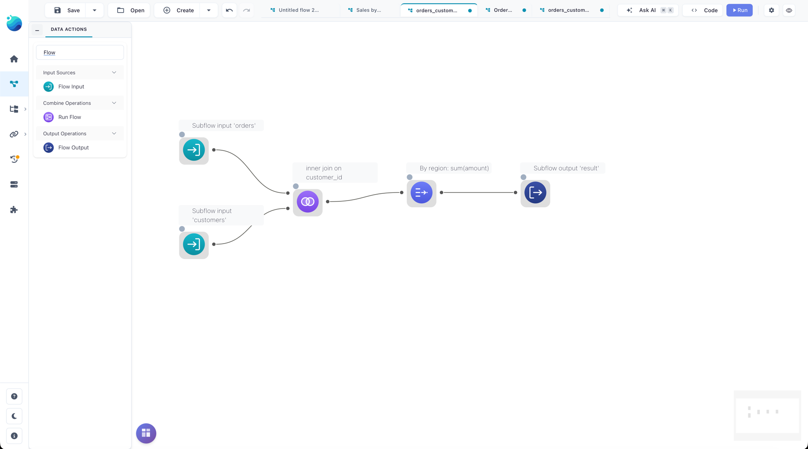
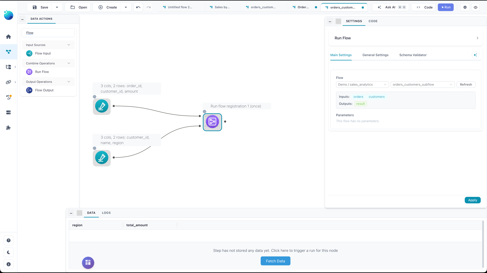

Subflows: run a flow inside another flow
This page is for analysts who want to reuse a flow as a building block. You'll learn how to turn a flow into a callable component with named inputs and outputs, register it in the catalog, and drive it from another flow with the Run Flow node — passing data in, mapping parameters, and reading results back.
Not in Flowfile Lite
Subflows depend on the catalog to resolve the child flow. The browser-only Flowfile Lite edition has no catalog, so the Flow Input, Flow Output, and Run Flow nodes are unavailable there.
When to use a subflow
A subflow is a flow you call from another flow. Reach for one when you want to:
- Reuse the same cleaning or scoring logic across several pipelines without copy-pasting nodes.
- Run one flow many times with different parameters — one execution per row of a driving table.
- Keep a large pipeline readable by extracting a self-contained stage into its own flow.
Three nodes make this work. Two mark the child flow's interface; one calls it:
| Node | Category | Role |
|---|---|---|
| Flow Input | Input | A named entry point where the parent injects data. |
| Flow Output | Output | A named exit point exposing a dataset to the parent. |
| Run Flow | Combine | Executes a catalog-registered flow, mapping data and parameters into it. |
Build the child flow
The child is an ordinary flow with two additions: named ports and (optionally) parameters.
Add Flow Input nodes
Drop a Flow Input node wherever the parent should hand data in. Each carries an input_name (default input) — the name the parent binds to. A Flow Input node has no upstream connection; it is a start node. When you run the child flow on its own, it serves the sample data configured in its settings (an empty frame when blank), so you can develop and test the child in isolation. When a Run Flow node calls it, that sample data is replaced with the real dataset the parent passes in.
Give each Flow Input a distinct, meaningful name (for example orders, customers) — those names are what you'll wire connections to in the parent.

Add Flow Output nodes
Drop a Flow Output node on each dataset you want to expose. Each carries an output_name (default output). A Flow Output must have exactly one input connected inside the child flow, and you can have several per flow — each becomes a separate output on the parent's Run Flow node.
Add parameters (optional)
If the child's behavior should vary per call, add flow parameters in the child's flow settings. A parameter has a name, a type (string, integer, float, boolean, or enum), and a default value. Inside the child flow, reference the parameter the same way you would in any flow (for example in a filter formula). The parent maps values into these parameters at call time.
Register the child in the catalog
Run Flow resolves the child by its catalog registration, not by file path — so before a parent can call it, the child flow must be registered in the catalog. Registration also gates access: a user can only run a subflow they own or one that has been shared with them.
Register the child from its flow detail panel in the catalog (the same registration step described in the Catalog guide). Once registered, it appears as a selectable flow in the Run Flow node's settings.
Reference stays valid if the file moves
The Run Flow node stores the child's registration id and stamps its flow UUID. If the registration id ever dangles, Flowfile repairs the reference from the UUID, so a re-registered or relocated child keeps working.
Call it with the Run Flow node
Add a Run Flow node to the parent flow and pick the registered child in its settings. Flowfile reads the child's interface — its Flow Input names, Flow Output names, and parameters — and shapes the node's handles to match.

Wire data inputs
Each Flow Input in the child becomes a data input handle on the Run Flow node, labeled with the port name. Connect the parent's upstream nodes to the matching handles. A subflow supports up to 9 data inputs. An input you leave unconnected falls back to the child's own sample data (the node logs a warning when that happens).
The node also reserves one extra input handle labeled Parameters — the driving table for column-mapped parameters (see below). It appears only when the child has parameters.
Map parameters
Each child parameter gets a binding that decides where its value comes from:
| Source | Meaning |
|---|---|
| Default | Use the parameter's default value from the child flow. |
| Constant | Use a fixed value you type in the Run Flow settings. |
| Column | Read the value from a named column of the Parameters input table. |
Column bindings are what make a subflow run repeatedly. Connect a table to the Parameters handle, map one or more parameters to its columns, and set the iteration mode:
- First value (default) — run the child once, using the first row's values.
- Iterate — run the child once per row of the Parameters table, and concatenate the outputs. Iteration is capped at 1000 rows.
When iterating, the Append run metadata option (on by default) adds a param_<name> column for each mapped parameter and a run_index column to each output, so you can tell which run produced which rows.
Read outputs
Each Flow Output in the child becomes an output handle on the Run Flow node, labeled with the port name (up to 10 outputs). Connect downstream nodes to the outputs you need. If the child flow has no Flow Output nodes, the Run Flow node instead emits a small run-summary table (one row per run, with the resolved parameter values).
What happens on run
When the parent runs and reaches the Run Flow node:
- Flowfile resolves the registered child, checks the current user may use it, and loads it.
- It computes the per-run parameter values from the bindings (one set of values per run in iterate mode).
- For each run it opens a fresh copy of the child flow, injects the connected data into the matching Flow Input nodes, applies the parameter values, and runs the child locally.
- It collects each Flow Output's dataset. Iterated runs are concatenated (with nulls filling any columns that differ between runs), and run metadata is appended when enabled.
The child always runs in-process and locally — it never registers itself as a live flow and never touches the global worker-offload setting. Outputs stay lazy in core; only the small parameter table is read eagerly.
Recursion and nesting limits
A subflow may not call itself, directly or through a chain — Flowfile detects the cycle and stops with an error. Nesting is capped at 5 levels deep.
Errors you may hit
- Referenced flow no longer exists — the child's catalog registration was removed. Re-register it, or point the Run Flow node at a different flow.
- No access to the referenced flow — you don't own the child and it hasn't been shared with you. See Sharing.
- Subflow no longer has port(s) / parameter does not exist — you edited the child's interface after wiring the parent. Reopen the Run Flow settings to re-sync its interface, then re-map.
- Subflow output has no input connected — a Flow Output node inside the child has nothing feeding it. Connect it or remove it.